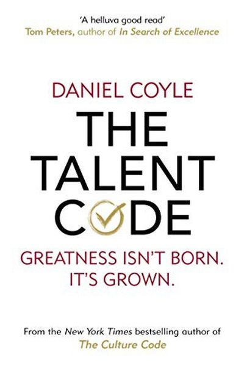

Library › Creativity
The Talent Code — Summary & Key Lessons

Greatness isn't born. It's grown — how deep practice, ignition and master coaching create world-class skill.
📖 OPEN THE FULL INTERACTIVE BREAKDOWN →🌐 Read it in Hindi, Hinglish, Gujarati, Tamil & 22 more languages — free, with audio.
💡 The Big Idea
Coyle traveled to 'talent hotbeds' — a Brazilian soccer academy, a Russian tennis club, a tiny music school in Texas — and found the same formula: talent isn't genetic magic. It's built through deep practice (repetition with focused error-correcting effort), ignition (a spark that makes you fall in love with the skill), and master coaching (guidance that keeps you on the edge of your ability). The physical mechanism: myelin — the insulation around neural circuits that grows with practice and makes pathways fast and reliable.
🧠 The 6 Key Lessons
Lesson 1: Myelin: The Talent Superhighway
The Deep Practice Cell
Skill is physical: every repetition fires a neural circuit, and each firing wraps that circuit in myelin — a fatty insulation that makes signals faster and more precise. The more you practice at the edge of your ability, the more myelin grows. Talent is literally built, cell by cell.
📖 Example: Coyle's brain scans and tissue studies of expert musicians and athletes show dramatically more myelin in the pathways they use. The 'gifted' child simply practiced deeper — often before anyone noticed. Read the full example →
⚡ Do this: Pick a skill you want to improve and reframe practice as building myelin: every focused rep matters, not just talent.
Lesson 2: Deep Practice: Reach, Repeat, Rest
Deep Practice
Deep practice has three rules: reach (try beyond your current ability), repeat (do it again and again, slowly if needed), and rest (skill needs sleep and recovery to consolidate). The sweet spot is the 'zone of struggle' — not too easy, not impossible — where errors happen and get fixed.
📖 Example: The Brazilian futsal kids Coyle studied played a smaller, heavier ball on a tiny court — forced to practice more touches, tighter control and faster decisions than a regulation game would allow. The struggle built the skill. Read the full example →
⚡ Do this: Take your current skill session and deliberately work at the edge: slower, smaller, harder — where you make and fix errors.
Lesson 3: Ignition: The Spark Before the Grind
Ignition
Before deep practice comes ignition: the moment you see a skill and think 'I want that'. Ignition comes from exposure — watching heroes, feeling a glimpse of future identity. It converts the long grind from a chore into a quest. Ignition is what makes someone practice for hours without being told.
📖 Example: Coyle's hotbeds all share a culture of 'future identity': kids see older students' success, parents' belief, and a clear path — 'that could be me'. The spark precedes the work. Read the full example →
⚡ Do this: Give yourself ignition: watch a master perform your skill, imagine your future self, and write one sentence of that identity.
Lesson 4: Master Coaching: The Guide on the Edge
Master Coaching
Great coaches are not cheerleaders — they're error-detectors. They watch for the one thing you're doing wrong, fix it, and push you back to the edge. Their feedback is short, specific, and immediate. A master coach compresses years of trial and error into targeted reps.
📖 Example: The Russian tennis coach Coyle observed uses a simple method: one correction, one drill, immediate repetition — no lectures. Each session is a series of small, precise fixes. Read the full example →
⚡ Do this: Find one person who can give you specific, immediate feedback on your skill — and take one correction to practice today.
Lesson 5: Slow Is Smooth, Smooth Is Fast
The Deep Practice Cell
Deep practice often starts painfully slow: breaking a movement or phrase into parts, rehearsing each slowly, then assembling. Slowing down maximizes error-detection and precision — and the myelin builds correctly from the start. Speed comes later, as a byproduct.
📖 Example: Coyle describes violin students who practiced a single phrase so slowly that each note was perfect — within weeks they outpaced classmates who played fast but sloppy. Read the full example →
⚡ Do this: Take the hardest part of your skill and practice it at half speed, watching for errors. Build precision first.
Lesson 6: The Talent Hotbed Formula
The Sweet Spot
Put it together and you get the hotbed formula: a community that ignites passion, a practice culture that reaches and repeats, and coaches who keep everyone at the edge. You don't need a special school — you can build the formula into your own practice: ignition + deep practice + feedback.
📖 Example: Coyle's most striking finding: the 'talented' kids weren't born different — they were first in line to practice, surrounded by peers who normalized effort, and coached with precision. The environment made the talent. Read the full example →
⚡ Do this: Build your own mini-hotbed: schedule daily edge-practice, find a feedback partner, and surround yourself with people who normalize the work.
✅ 5-Step Action Plan
- Reframe practice as myelin-building: every focused rep counts.
- Practice at the edge of your ability — reach, repeat, rest.
- Create ignition: watch a master, imagine your future self.
- Get one specific correction from a coach or peer this week.
- Go slow on the hard parts — precision before speed.
⚠️ When This Doesn't Work
Coyle's 'deep practice builds myelin' is the best book on skill-building ever — and RadioShack is the warning that skill without practice decays: the company that once had the deepest talent pool in electronics retail — trained, knowledgeable, unbeatable on the floor — let the practice stop for two decades, and by the time the stores closed, the 'talent code' had been diluted into minimum-wage staffing. Coyle's point is that skill is biological — it is built by reps and lost by their absence. The caveat: talent is not an asset you own; it is a practice you perform. Stop the reps, and the myelin — and the business — quietly dissolve.
💀 The Graveyard Proves It
📻 RadioShack — 100 Years of 'The Electronics Store' — Diluted to Death. Burn: From 7,000 stores and $4B revenue to bankruptcy twice. Read the full case study →
💬 Best Quotes from The Talent Code
- “Every skill is built by firing a circuit, and every time we fire a circuit, myelin wraps it a little more.”
- “Deep practice is not simply about practicing; it's about practicing at the edge of your ability.”
- “Passion is not something you find — it's something you ignite.”
Interactive version: mark lessons as read, listen in your language, share quote cards.